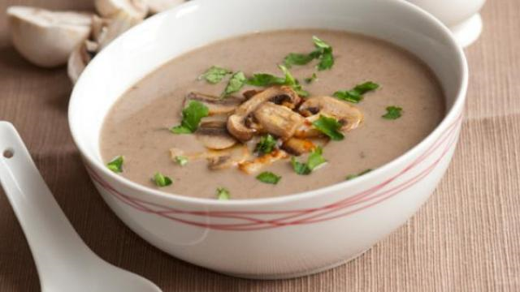

Champignonsoep
Een heerlijk voorgercht.
Ingrediënten
- 1 ui
- 250 gram champignons
- 50 gram boter
- 3/4 liter kippenbouillon
- 3 theelepeles aardappelzetmeel of maizena
- 2 deciliter room
- zout
- peper
- nootmuskaat
Bereidingswijze
- Smelt de boter zonder dat ze bruin word in een diepe pan en bak hierin de gesnipperde ui zachtjes glazig (ca. 3 minuten).
- Voeg de plakjes champignons toe en bak ze 1 minuut mee.
- Schep zo nu en dan de champignons om.
- Voeg de bouillon toe en breng de soep op hoog vuur aan de kook.
- Draai het vuur laag en laat de soep 5 minuten zachtjes koken.
- Roer de maizena los met een eetlepel room, roer het "papje" en de rest van de room door de soep en laat de soep nog 5 minuten koken.
- Breng de soep op smaak met wat zout, peper en een snufje nootmuskaat.

Lekker met warm stokbrood.